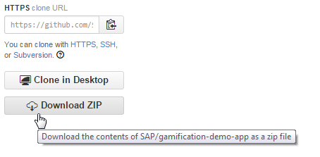
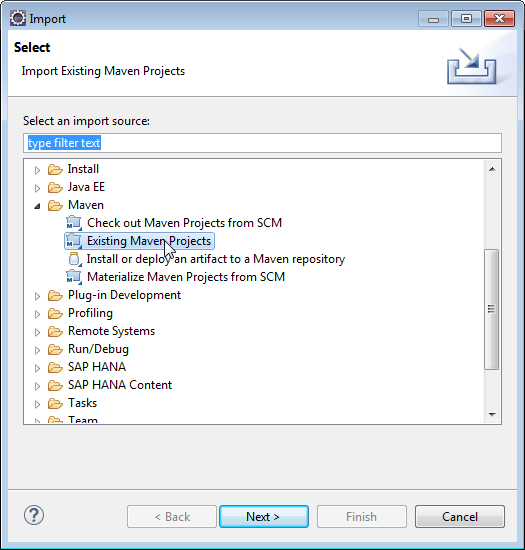

HelpDesk App - Standalone Deployment
Prerequisites
You have an Eclipse IDE with SAP Cloud Platform tools.
For more information about how to install the SAP Cloud Platform tools, see Eclipse Tools.
Context
The demo application's (Help Desk) source code is also available in GitHub .
.
This section explains how to set up an Eclipse project, deploy the demo application on SAP Cloud Platform, and configure it to run with your gamification service subscription.
Procedure
-
Download sources as a zip from GitHub.

-
Open Eclipse with SAP Cloud Platform
tools and choose
 File
File  Import
Import  .
.
-
Choose Maven Existing Maven Projects .
